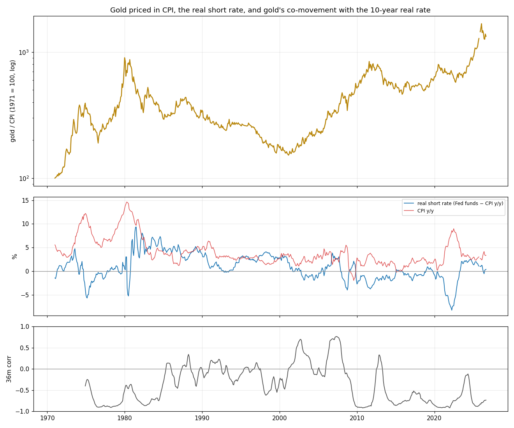

RS-XAUUSD-20261027-001 · XAUUSD · 2026-10-27
Gold against real rates, nominal rates and CPI since 1971 — no regime could be told apart for the next year at about 20-point resolution; since 2023 the price level sits beyond the error band of the 2006-2021 real-rate relation (exploratory); gold is near its most expensive ever in CPI terms
1971 年以來的月資料裡，實質短率、它的方向、聯準會升降息或 CPI 高低，能不能分辨黃金接下來 12–24 個月？黃金和 10 年實質利率怎麼一起動？歷史上哪幾個月最像現在？
影片 Video
在 YouTube 觀看：降息黃金就會漲？1971 年以來降息後一年 +9.1%，平常 +11.7%｜EP03 黃金筆記 ↗
下一個研究方向：實質利率的方向能不能事先看出來；央行買金和金價（觀眾投票）
一分鐘重點（Shorts）：
Headline Metrics 關鍵數字
Key Findings 重點發現
分不出任何利率或通膨環境對黃金接下來 12 或 24 個月的差別
11 個分組、668 個月，沒有一組分得出來；12 個月的門檻 16–23 個百分點，24 個月更大。實質短率 > 2%：12 個月平均 +4.63%（中位數 −0.85%；233 個月、12 段），比全體平均 +11.72% 低 7.09 個百分點，門檻 20.04。0–2%：平均 +26.26%（中位數 +18.58%；177 個月，其中 168 個有 12 個月結果），高 14.54 個百分點，門檻 22.72。升息期點估計比降息期高（12 個月平均 +21.66%，n=172，對 +9.10%，n=166），跟教科書相反，但兩組分不出差別；附的門檻是各組對全體，兩組互比的門檻更大。事後補算（不在設計內，不在 results.json）：「升息期比降息期高」這個相反來自 1970 年代；1980 年起，升息期 +3.94%（n=116）、降息期 +7.50%（n=135），方向就翻回教科書。但實質短率那一組的相反沒有消失：1980 年起實質短率一年升 > 1 點 +8.12%（n=150）對降 > 1 點 +4.50%（n=157），0–2% +13.46%（n=121）對 < 0 的 +5.79%（n=206），方向和全期一樣（差 3–8 個百分點，遠小於全期約 20 點的解析度，子樣本更小、解析度更差，所以同樣分不出來）。最大的 |差|／門檻是 0.64（實質短率 0–2%，名目 12 個月：+14.54／22.72；實質 12 個月為 0.66）：這份樣本分辨不出小於約 20 個百分點的差別，不等於沒有差別。
按年變化來看，黃金仍然和實質利率反向
黃金 12 個月漲跌 對 10 年實質利率 12 個月變化，36 個月滾動相關係數：2026-09 為 -0.734（12 個月變化互相重疊，約只有 3 個獨立年份；這條序列歷史上從 -0.92 到 +0.76 都出現過，23% 的月份是正的）。全期 -0.456（657 個月；12 個月區塊 bootstrap 95% 範圍約 -0.60～-0.29，事後補算）。各年代（各約 10 個獨立年份，誤差約 ±0.6）：1990 年代 -0.08、2000 年代 0.067 分不出和 0 的差別；2010 年代 −0.70。這是同期關係，只能描述，不能預測（K-MAC-002）。
探索性：價格水準 2022 年起開始偏離 2006–2021 的實質利率關係，2023-01 起超出誤差帶（2026-09 高 281%，2026-02 最高 +300%）
探索性，看過資料後才做。用 2006–2021 年（n=192，R² 0.763）的關係：實質殖利率每高 1 個百分點，扣通膨後金價約低 20%（e^−0.2212 − 1 = −19.8%）。R² 偏高：兩條序列都有趨勢，殘差高度自相關（lag-1 0.92、Durbin-Watson 0.15，事後補算）；以 fit 期最大偏離 40.6% 當粗略誤差帶。照這個關係，10 年 TIPS 2.64% 對應金價約 1,126（不是精確的合理價），實際是 4,287（2026-09）。偏離從 2021-12 的 −13%，2022-11 的 +36.5%（2022 年每個月都還在 41% 誤差帶內），2023-01 的 +42%（第一個超出誤差帶的月份），到 2023-10 的 +84%，2026-02 見頂 +300.5%，2026-09 為 +281%。表中的月份是看過資料後手選的。281% 遠超過 41% 的誤差帶，所以「遠高於這個關係」的描述對 2026-09 和 2023 年以來站得住；偏離從 2022 年開始拉開，但 2023-01 以前都在誤差帶內；原因本研究沒有檢驗（常見的解釋是 2022 年起的央行買盤）。漲跌仍跟著實質利率變化走（見上一則）。
扣掉通膨後，黃金在自己歷史的第 99.0 百分位；過去進入前 10% 之後兩種結果都有
金價÷CPI 的百分位（只用過去資料）2026-09 為 99.0（2026-01 與 2026-02 都是 100；月收盤高點與金價÷CPI 高點都在 2026-02）。1975 年起 5 次進入前 10%（相隔至少 24 個月才算一次；連續月份共 14 段），24 個月後實質報酬：1975 −33.7%、1978 +154.8%（漲到 1980 高點）、2008 +15.2%、2016 −13.3%、2019 +20.5%。所有在前 10% 的月份，24 個月實質中位數 +2.11%（145 個月，約 6 個獨立樣本），差 −4.49，門檻 54.85。
跟現在最像的 5 個月：一年後 2 次漲、3 次跌
現在（2026-09）：金價÷CPI 第 99.0 百分位、離月收盤高點 −18.8%、實質短率 +0.40%（聯邦基金 3.75%、CPI 3.35%，是 8 月 CPI，即 2026-09 月底已公布的最新值）、實質短率一年降 0.88 個百分點、聯準會近 6 個月持平、黃金一年 +14.0%。最像的：2019-12（12 個月 +24.2%）、2017-12（−1.7%）、2014-06（−10.7%）、2012-03（−4.3%，24 個月 −22.5%）、2009-12（+28.7%）。只有 5 個樣本，是提醒不是預測。
Chart 圖表


最像現在的 5 個月，與之後 6／12／24 個月的報酬
欄位：month 月份；distance 與現在的距離（越小越像）；gold_real_pct 金價÷CPI 的歷史百分位；dd_ath 離月收盤高點的跌幅（%）；real_short 實質短率（%）；d12_real_short 實質短率一年變化（百分點）；cpi_yoy CPI 年增率（%）；gold_12m 黃金過去 12 個月漲跌（%）；fwd_6m_pct／fwd_12m_pct／fwd_24m_pct 之後 6／12／24 個月名目報酬（%）。只有 5 個樣本，是提醒不是預測。
| 2019-12 | 0.893 | 91.5 | -17.38 | -0.54 | -0.66 | 2.09 | 17.95 | 17.26 | 24.17 | 21.03 |
|---|---|---|---|---|---|---|---|---|---|---|
| 2017-12 | 1.022 | 85.94 | -28.77 | -0.87 | 0.27 | 2.17 | 13.08 | -3.8 | -1.67 | 15.98 |
| 2014-06 | 1.165 | 89.14 | -28.07 | -2.07 | -0.77 | 2.17 | 6.57 | -9.12 | -10.66 | 0.05 |
| 2012-03 | 1.244 | 97.44 | -8.73 | -2.77 | -0.78 | 2.9 | 16.73 | 6.13 | -4.32 | -22.46 |
| 2009-12 | 1.253 | 95.62 | -6.22 | -1.79 | -0.85 | 1.91 | 27.01 | 13.67 | 28.7 | 41.63 |
扣通膨後進入歷史前 10%，之後 24 個月
欄位：first_month 第一次進入前 10% 的月份（相隔至少 24 個月才算一次）；gold 當月金價；gold_real_pct 金價÷CPI 的歷史百分位；real_short 實質短率（%）；cpi_yoy CPI 年增率（%）；fwd24_real_pct 之後 24 個月扣通膨報酬（%）；fwd24_pct 之後 24 個月名目報酬（%）。5 次進入、約 6 個獨立樣本，兩種結果都有。
| 1975-01 | 176.05 | 91.8 | -4.97 | 12.1 | -33.72 | -25.42 |
|---|---|---|---|---|---|---|
| 1978-09 | 217.1 | 92.4 | 0.59 | 7.86 | 154.75 | 221.63 |
| 2008-01 | 913.5 | 92.8 | -0.17 | 4.11 | 15.18 | 18.4 |
| 2016-07 | 1,350.91 | 90.2 | -0.69 | 1.08 | -13.34 | -9.44 |
| 2019-07 | 1,418.69 | 90.1 | 0.73 | 1.67 | 20.54 | 27.83 |
價格水準和 2006–2021 實質利率關係的偏離（探索性）
欄位：列的第一格是月份；gold 當月金價；real_10y 10 年實質利率（%，TIPS）；implied_gold 照 2006–2021 關係推算的金價；gap_pct 實際金價比推算高出的百分比（fit 期最大偏離 40.6% 可當粗略誤差帶，2023-01 起超出）。月份是看過資料後手選的，表中沒有最大偏離月：2026-02 是 +300.5%（推算金價約 1,318，事後補算，不在 results.json）。探索性。
| 2021-12 | 1,828.39 | -0.99 | 2,099.32 | -12.9 |
|---|---|---|---|---|
| 2022-10 | 1,641.76 | 1.59 | 1,259.54 | 30.3 |
| 2023-10 | 2,005.78 | 2.41 | 1,088.85 | 84.2 |
| 2024-06 | 2,325.71 | 2.05 | 1,202.26 | 93.4 |
| 2025-06 | 3,274.25 | 2.09 | 1,220.95 | 168.2 |
| 2026-01 | 4,865.35 | 1.91 | 1,291.85 | 276.6 |
| 2026-09 | 4,287.25 | 2.64 | 1,126.23 | 280.7 |
詮釋與實務意義
在約 20 個百分點的解析度內，利率和通膨的環境分不出黃金明年的差別：每一個分組都在門檻內；有些點估計和教科書相反：升息期高於降息期，這主要來自 1970 年代（事後補算）；實質短率上升期高於下降期的點估計在 1980 年後仍在（+8.12% 對 +4.50%），但同樣分不出來。這不等於沒有效果，只是這份樣本測不出來。能描述的是兩件事。第一，同期來看，實質利率上升的那一年黃金通常比較弱（36 個月相關 −0.73，約 3 個獨立年份，歷史範圍 −0.92～+0.76；全期 −0.456）；2 月到 9 月 10 年 TIPS 從 1.82% 升到 2.64%，和這次回檔同期發生。如果你能判斷實質利率接下來的方向，這個關係才有用；本研究沒有檢驗方向本身能不能預測，水準更不能預測。第二（探索性）：金價水準 2022 年起開始偏離 2006–2021 的關係，2023 年起超出誤差帶（約 ±41%）；2026-09 照那個關係約 1,100，實際高出近 3 倍。原因本研究沒有檢驗；常見的解釋是央行買盤，如果真是如此，買盤減弱就是風險。扣通膨後黃金在歷史第 99.0 百分位，過去在這個位置之後兩年，結果從 −34% 到 +155% 都有。
限制與注意事項
- 月資料；視窗重疊，每組 12 個月約 14–36 個獨立觀察，24 個月約 7–18 個。
- 2003 年前用事後實質利率（10 年公債 − CPI 年增率），之後用 TIPS，兩者不是同一種量法。設計登記的換接點是 2004，程式實際從 2003-01 換，使 2003 年的 12 個月變化有拼接造成的假跳動（改用 2004 重算：全期相關 -0.452、2000 年代 0.069、最近 36 個月 -0.734 不變）。
- 價格水準偏離那一段是看過資料後才加的，屬探索性；R² 因趨勢與自相關而偏高，表中月份是手選的。
- 相關係數的抽樣誤差很大（36 個月滾動相關約只有 3 個獨立年份）；排除 1970 年代的拆解、區塊 bootstrap、殘差檢定都是看過結果後補算的，不在 results.json（Public 的 analysis.py 不會產生）。
- 門檻是各組對全體，不是兩組互比。
- 相似月份只有 5 個，標準化用了全期資料。
- 1980 年 1 月與 2026 年的 CPI 調整後金價對照（CPI-U，另以 PCE 物價指數做敏感度）是看過結果後補算的描述，不在設計內也不在 results.json，放在本研究 analysis 資料夾（post_hoc_1980.py 與其輸出）；1980 年高點 850 是倫敦下午定盤價（二手來源），不是盤中高點。